The approved direction
Warm cream, olive and terracotta; fine clock faces, generous numerals and small botanical flourishes. Analog, Landscape, Flip and Botanical are implemented. The ring and window concepts remain excluded.
 Approved generated contact sheet · first four selected
Approved generated contact sheet · first four selectedThese are live clock widgets. Their local vector art interprets the concept’s warmth; it does not reproduce every raster texture. The date and time always follow the configured city.
Concept → implementation
The medium module is rectangular: six grid columns by six grid rows is not a physical square. Each design adapts its composition instead of stretching its artwork.
Landscape
Warm serif time and rolling hills. The sun stays circular in each art region. Wide layouts separate time and scenery; tall layouts use an upper time group and lower landscape.
Approved concept Final app render · Landscape · medium module
Final app render · Landscape · medium module Compare with the previous shipped implementation
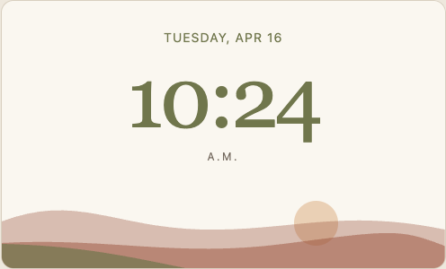
Previous 2.15.2 implementation · Landscape · mediumAnalog
A quiet cream face with a trailing plant. Finer cardinal numerals, a softer rim and slender terracotta hands. The plant supports the dial; strips put the date beside a larger face.
Compare with the previous shipped implementation
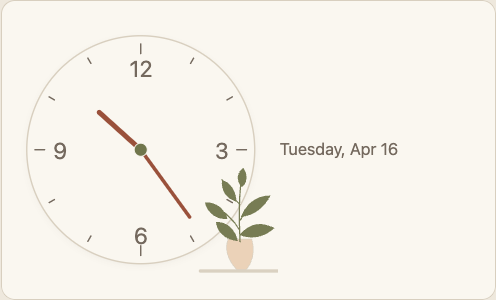
Previous 2.15.2 implementation · Analog · mediumFlip
Olive tiles, fine numerals and a ceramic vase. Clear split seams and hinges, two-phase shaded motion and a restrained settle. Tall modules stack the tiles vertically; a reserved ornament area prevents collisions.
Approved concept Final app render · Flip · medium module
Final app render · Flip · medium module Compare with the previous shipped implementation
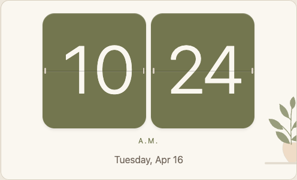
Previous 2.15.2 implementation · Flip · mediumBotanical
Terracotta time, a quiet wash and a curved branch. A bare branch replaces the generic pot. Smaller varied leaves stay clear of time; the upper leaf is complete. Minimum and strip layouts omit decorative art.
Compare with the previous shipped implementation
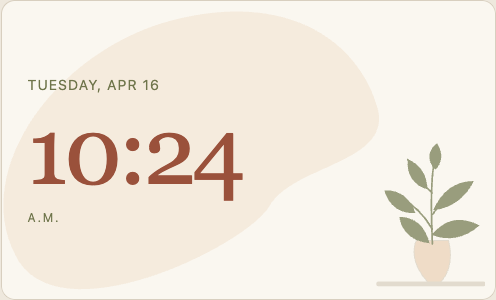
Previous 2.15.2 implementation · Botanical · mediumAll six module shapes
Minimum 3×3, wide 6×4, medium 6×6, tall 3×12, strip 12×3 and full 12×12 at the frame’s 1280×720 CSS canvas. Open any crop to inspect its original pixels. Sheet cells scale for comparison; they are not a native-size legibility test.
Landscape
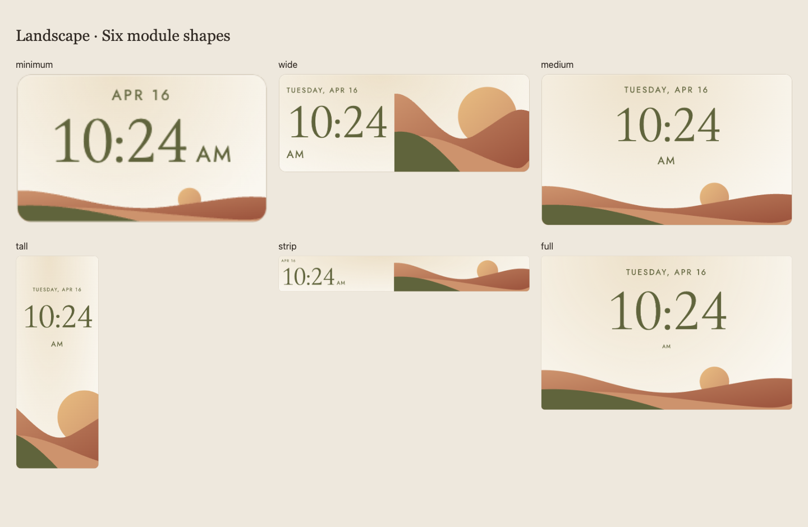
Landscape · six-shape contact sheetOpen individual original crops
Analog
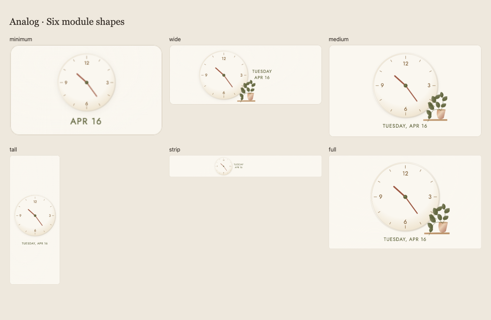
Analog · six-shape contact sheetOpen individual original crops
Flip
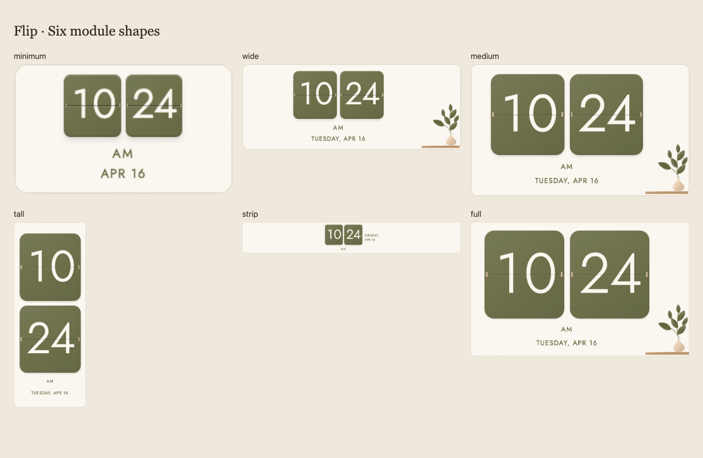
Flip · six-shape contact sheetOpen individual original crops
Botanical
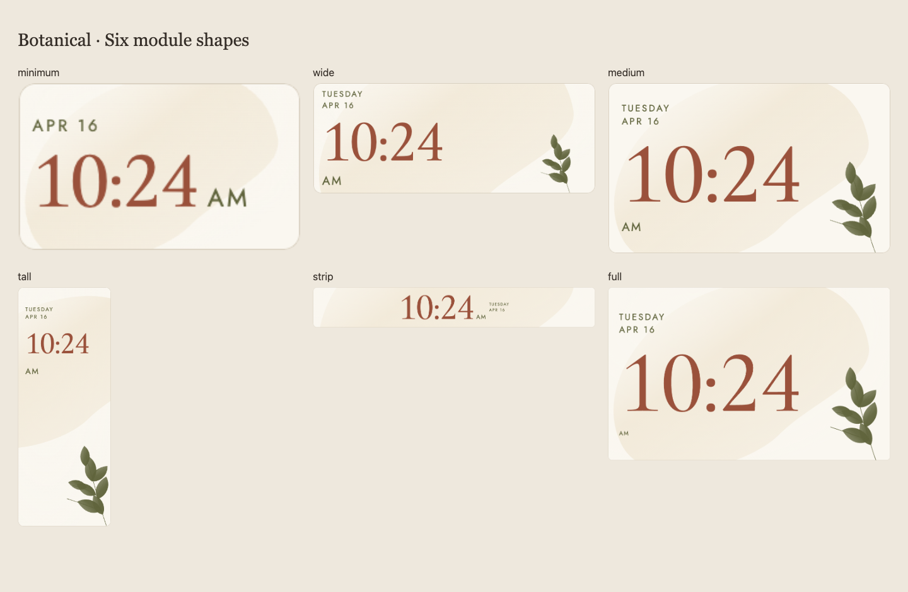
Botanical · six-shape contact sheetOpen individual original crops
A flip that feels mechanical
The upper old half folds away; the new lower half arrives with shaded depth and a gentle settle. Only changed numbers animate on ordinary visible ticks. Startup, unchanged ticks, time jumps and reduced motion update immediately. Style changes and hidden updates cancel both halves.
Actual app animation, sampled from its Web Animations timelines at 50 frames per second: 10:24 → 10:25. No motion was added in the video editor.
Every palette, both modes
All six light/dark pairs remain available. The final theme pass also caught and fixed dark Linen Flip contrast; every palette now has a regression check for at least 4.5:1 numeral contrast against its base tile.
 Landscape
Landscape Analog
Analog Flip
Flip Botanical
BotanicalLight/dark comparison sheet
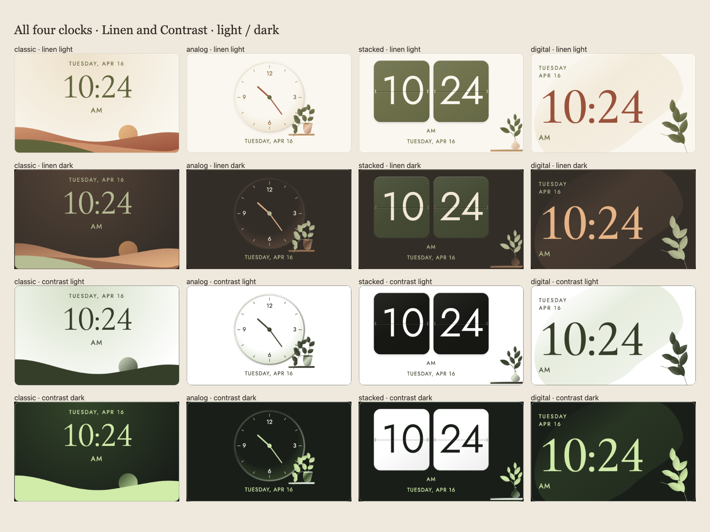
Linen and High contrast · light / darkThe critique changed the result
This follows the build–capture–critique pattern from dream-loop, adapted to the existing approved target and live responsive widgets. The independent critic reviews original app pixels; functionality is verified separately.
| Pass | Verdict | What changed |
|---|
| First review | REVISE | Sun clipped flat, Flip ornament/date collisions, under-scaled strip compositions and over-large Botanical decoration. |
| Composition pass | Internal capture | Redrew landscape bounds, reserved a Flip ornament area, centered horizontal strips, reduced Botanical art and used exact lining-glyph measurements. |
| Second review | REVISE | All compositions passed, including vertical tall Flip. One Botanical top leaf still clipped its SVG viewport. |
| Third review | ACCEPT | Expanded Botanical drawing bounds, checked complete leaf silhouettes, kept successful layouts intact. |
| Theme / motion pass | ACCEPT | Corrected dark Linen Flip contrast and inspected all palettes plus real animation frames. |
“All prior visual blockers are resolved across the six shapes.”
Independent acceptance is scoped to supplied captures. Analog strip placement and flatter vector materials remain aesthetic preferences; neither caused a readability or clipping failure.
Read the independent reviews
First review · Second review · Third review · Theme / motion review
Rejected captures
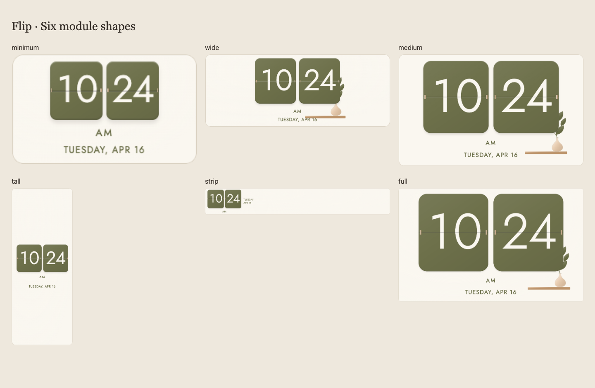
Rejected first-pass Flip · ornament collisions and weak strip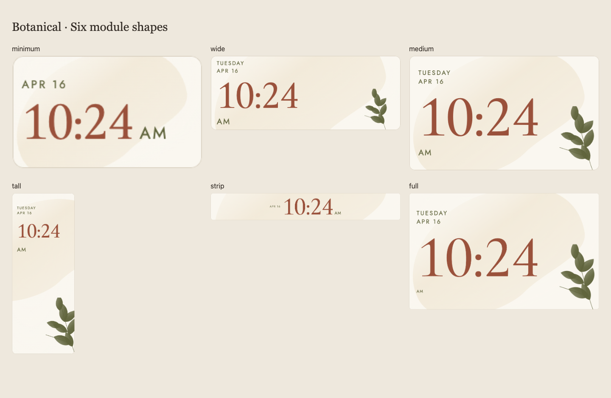
Rejected second-review Botanical · clipped top leafVerification and delivery
| Unit tests | 83 JavaScript tests and 16 Python tests pass. |
|---|
| Clock browser checks | 67 groups pass: nine viewport sizes, standard/large text, six shapes, city time, midnight/noon, 12/24-hour formats, saved choices, font bounds and animation cleanup. Zero runtime errors. |
|---|
| Whole app | 32 rendered groups pass; zero load retries and runtime errors. First-run guide, Settings navigation and privacy boundaries remain covered. |
|---|
| Theme captures | 48 actual app crops: four clocks × six palettes × light/dark. All use bundled local fonts. |
|---|
| Privacy / packaging | Normal signed APK has empty household configuration and excludes synthetic fixtures. Source, full Git history, APK and Gitleaks scans pass with zero findings. |
|---|
| Physical frame | Wireless ADB is currently unavailable. This build has not been installed or verified on the frame. Browser acceptance does not establish physical WebView 95 acceptance. |
|---|
| APK | 2.15.3 · code 31 · normal signed build
499eb1d7ef0b06bff98ea1912659f3e1937c6f4e7faf2f85a1bec2a128faf0f2 |
|---|
Clock check manifest · Full-app check manifest · Theme capture manifest
In the dashboard and Settings
The normal dashboard stays free of editing controls. Choose the clock style in the Settings lightbox, review its live sample, then Save. Existing style identifiers preserve your saved clock choice.
Desktop, minimum and larger-text captures